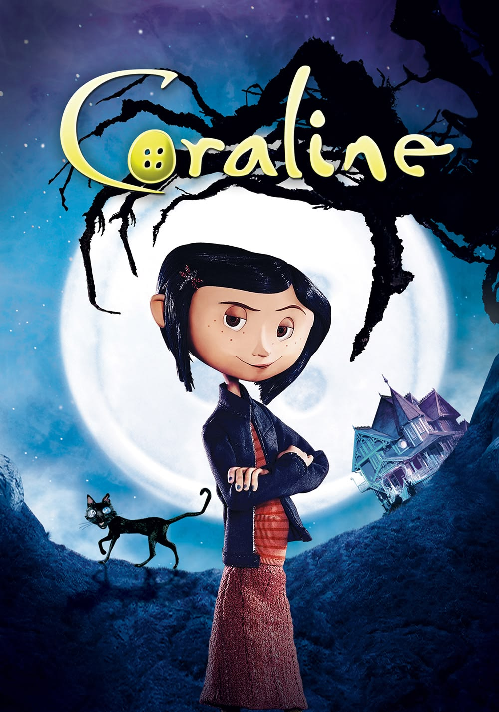

Destaques da Semana

A Noiva Cadáver
Uma história sombria sobre Victor, que conhece Emily no mundo dos mortos.

A Lenda do Cavaleiro sem Cabeça
Um investigador chega a uma vila tomada por lendas e mistérios.
Catálogo de Filmes
Escolha um filme para sua próxima noite de suspense.

Coraline e o Mundo Secreto
2009 | Fantasia e mistério

Edward Mãos de Tesoura
1990 | Fantasia gótica

O Estranho Mundo de Jack
1993 | Fantasia e musical

Drácula de Bram Stoker
1992 | Terror gótico

Frankenstein
1931 | Terror clássico

O Corcunda de Notre Dame
1996 | Drama e mistério
Sobre o Clube

O Clube da Meia-Noite reúne histórias de fantasia sombria, terror e mistério.